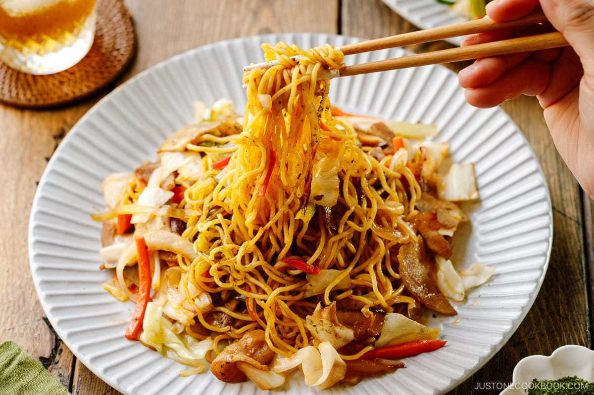

Yakisoba (Japanese Stir-Fried Noodles) 焼きそば

Description
Yakisoba (焼きそば) is a stir-fried noodle dish that typically includes meat or seafood, as well as vegetables such as cabbage, carrots, onions, and bean sprouts. These ingredients are all cooked together in a thick, sweet-savory sauce, and the final dish is usually topped with aonori (dried green seaweed) and red pickled ginger for added flavor
Ingredients
Sauce
- 1/4 cups Worcestershire sauce
- 4 tsp oyster sauce
- 4 tsp ketchup
- 2 tsp soy sauce
- 2 tsp sugar
Yakisoba
- 3/4 lb sliced pork belly
- 1/2 gonion
- 4 inches carrot
- 1/4 head green cabbage
- 2 green onions/scallions
- 3 shiitake mushrooms
- 2 Tbsp neutral oil
- 3 servings yakisoba noodles
- freshly ground black pepper
- 1/2 cup yakisoba sauce
Steps
- Gather all the ingredients. Freeze the pork belly slices for 10 minutes so that it‘s easier to cut. Tip: For the sauce, I recommend doubling the recipe, just in case. It‘s hard to measure the vegetables and meat precisely, and if you end up adding more ingredients, you‘ll need more sauce so the yakisoba is flavorful.
- Whisk together all the ingredients for the Yakisoba Sauce: ¼ cup Worcestershire sauce, 4 tsp oyster sauce, 4 tsp ketchup, 2 tsp soy sauce, and 2 tsp sugar. At this point, it‘s important to taste the sauce and add more sugar, if needed. For example, some ketchup is sweeter than others while some Worcestershire sauce is less sour than others. Set it aside.
- Remove ¾ lb sliced pork belly from the freezer. Cut the pork belly slices into 1-inch (2.5-cm) pieces.
- Cut ½ onion into ¼-inch (6-mm) slices.
- Cut 4 inches carrot into 2-inch slabs. Then, cut them into julienne strips 2 inches (5 cm) long.
- Remove the core from ¼ head green cabbage. First, cut the cabbage wedge into slices 1 inch (2.5 cm) wide.
- Then, cut the slices into bite-sized pieces.
- Chop 2 green onions/scallions into 2-inch (5-cm) pieces. Cut any thick, white parts of the green onions in half lengthwise.
- Remove the stems from 3 shiitake mushrooms. Cut the caps into ¼-inch (6-mm) slices.
- Heat a griddle (I use a similar one; you can use a large frying pan or wok) on medium heat. When it‘s hot, add 2 Tbsp neutral oil. Then, add 3 servings yakisoba noodles. Tip: The pre-steamed noodles will come pressed together into squares. You do not need to loosen them before placing them on the griddle.
- When the bottom side of the noodles is heated, flip them. The goal here is to loosen up the noodles gently without breaking them into short pieces. If you force them to separate, the noodles will break up. So be patient here.
- With chopsticks, gradually loosen up the noodles. Once they have loosened up completely, transfer them to a plate.
- To the hot griddle, add the pork belly slices and separate the chunks into a single layer. (If you are not using pork belly, add 1 Tbsp oil to the griddle before adding your choice of protein.) Season with freshly ground black pepper.
- Stir-fry until the pork belly is no longer pink.
- Next, add the onion slices to the griddle. Stir to cook for 1–2 minutes, separating the onion layers as you stir-fry.
- Add the carrots and cook for another 1–2 minutes.
- Add the cabbage and shiitake mushrooms. Cook until they are almost tender.
- Lastly, add the green onions and cook for 1 minute.
- Put the yakisoba noodles on top of the protein and vegetables on the griddle. Then, drizzle ⅓ cup yakisoba sauce on the noodles. Taste the noodles and add more sauce, if desired.
- With a pair of tongs, toss to combine the noodles with the sauce and other ingredients. Keep an eye on the noodles as they may stick to the skillet/wok. When the sauce is well distributed and the noodles are warmed through, transfer the yakisoba to individual plates.
- Garnish with optional aonori (dried green laver seaweed) and pickled red ginger (beni shoga or kizami beni shoga). Serve immediately.
Homepage